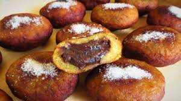

Rellenitos
¡Un delicioso postre para acompañar!
Una delicia de la gastronomía guatemalteca: los rellenitos. Estos pequeños bocados dulces son una verdadera tentación para los amantes del dulce y te transportarán a un mundo de sabores exquisitos y reconfortantes.
Los rellenitos son una especie de buñuelos rellenos de frijoles dulces y se elaboran a partir de plátanos maduros cocidos y aplastados hasta formar una masa suave y dulce. Esta masa se rellena con una deliciosa mezcla de frijoles cocidos, azúcar, canela y otras especias, que le dan un sabor único y delicioso.
Una vez rellenos, los rellenitos se fríen hasta que adquieren un delicioso color dorado y una textura crujiente por fuera, pero suave y dulce por dentro. Se sirven tradicionalmente espolvoreados con azúcar glas y canela, creando una combinación perfecta de sabores y texturas que deleitará tu paladar.
Esta disponible por tan solo Q10.00
